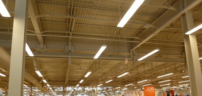

Metal [RME]
La estructura del techo está construida con metal. Note que esto se refiere a la estructura, y no a cualquier hoja metálica de recubrimiento del techo que pueda estar presente.

Estructura del techo de metal (acero) compuesta por vigas de acero (perfiles de acero laminado), soportando cerchas de acero(viguetas o mallas de acero) y recubrimientos del techo de acero, Canada (S. Brzev)